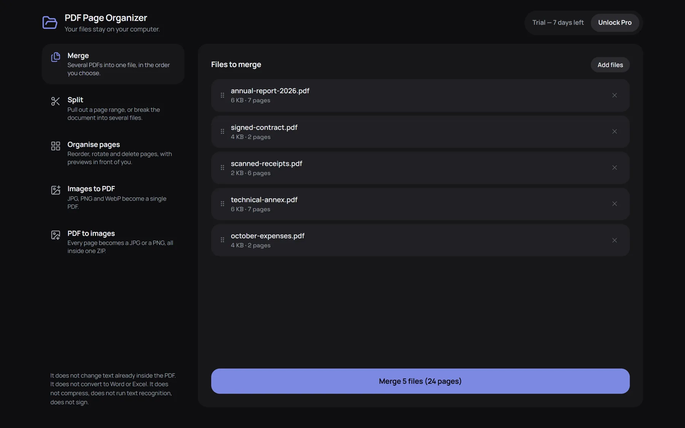
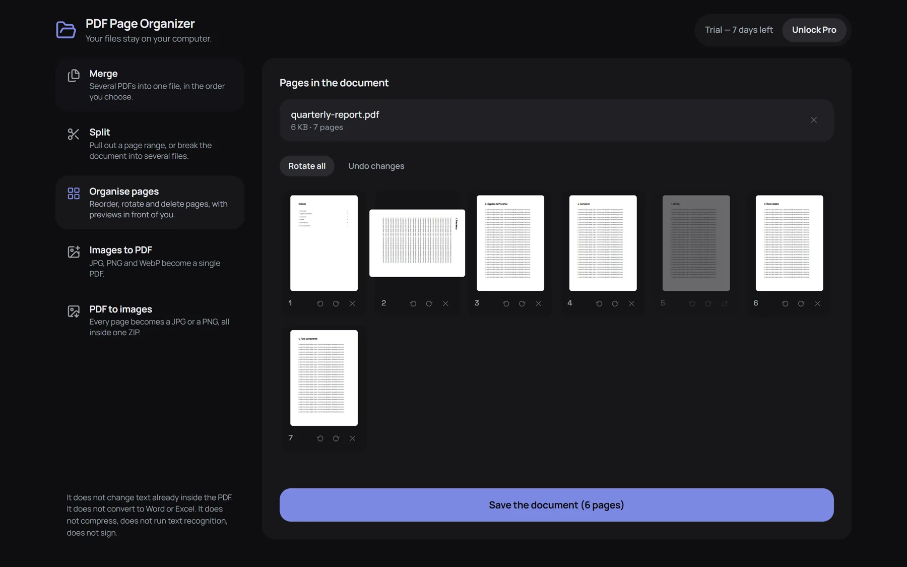

Your PDF pages, sorted. Don't take our word for it.
Merge, split, reorder, rotate and delete pages in a workbench that opens in a tab. Every PDF tool promises your files stay private, and the promise is easy to make. With an extension you can check it: the browser lists everything it is allowed to touch, before you install — and the other PDF extensions are in the same list, where many of them ask to read every page you open.
No accountNothing is uploadedOne line in the install dialogWorks offline

Five documents in a row, in the order you choose. The button says what it will produce.
Five tools, one workbench
Drop the files in, do what you need, download the result. Nothing to set up, nothing to sign up for.
Merge
Several PDFs into one file, in the order you choose. Drag the rows to change it.
Split
Pull out a page range, or break one document into several files at the points you pick.
Organise pages
Reorder, rotate and delete pages with the previews in front of you. Undo until you save.
Images to PDF
JPG, PNG and WebP become a single PDF, each picture on its own page.
PDF to images
Every page becomes a JPG or a PNG, all of them inside one ZIP.
The pages in front of you, not a list of numbers
Rotate one page, mark another for deletion, drag them into a new order. The button tells you what the saved document will contain before you click it.

What it does not do — said here, not buried in an FAQ
The big “PDF editors” sit at 1.5 stars because they promise things they cannot do. These are ours, in writing.
noIt does not change text already inside the PDF.
noIt does not convert to Word or Excel.
noIt does not compress PDFs.
noIt does not run text recognition (OCR).
noIt does not sign: your browser already annotates and signs PDFs on its own.
Don't take our word for it: read the permissions
Not a promise on a page: it is how the extension is built, and you can check it in ten seconds.
Permissions: none
Before you install, the browser lists what an extension may touch. Under “Permissions” ours says: “This extension requires no special permissions”. Under “Site access” there is a single address: extensionpay.com, the page where you pay — nothing about the sites you visit. Many PDF extensions ask to read every page you open: check theirs too, and check ours again any time in chrome://extensions → Details.
No server, no account
The PDF is opened, changed and saved by your own browser. Contracts, payslips and medical records stay where they are.
No ads, no analytics
Nothing is counted, nothing is sent. Switch the wi-fi off and everything still works.
Seven days free. Then one payment, and it is yours.
The trial is the full version: no email, no credit card, nothing to cancel. When it ends the extension keeps working on smaller jobs — what comes out is always a healthy document, with no watermark.
Free, after the trial
€0 forever
- Up to 20 pages at a time
- Merge 2 files at a time
- 5 images into a PDF
- First 3 pages out as images
- No watermark, nothing spoiled on purpose
Pro
€14 once, yours forever
- Documents of any length
- Merge as many files as you like
- All your images into one PDF
- Every page out as an image, in one ZIP
- No subscription, no account
Refund within 14 days if it is not for you. Payment is handled by Stripe; we never see your card.
Try it on a document of your own.
It installs in a few seconds and the trial starts straight away — nothing to fill in.